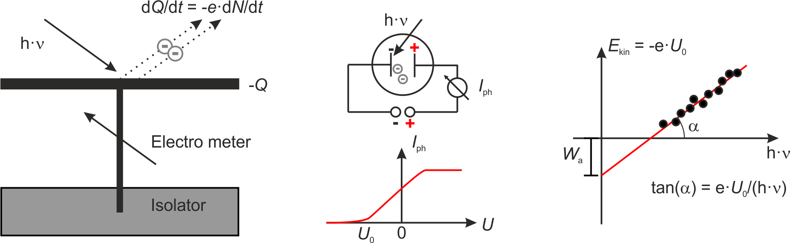
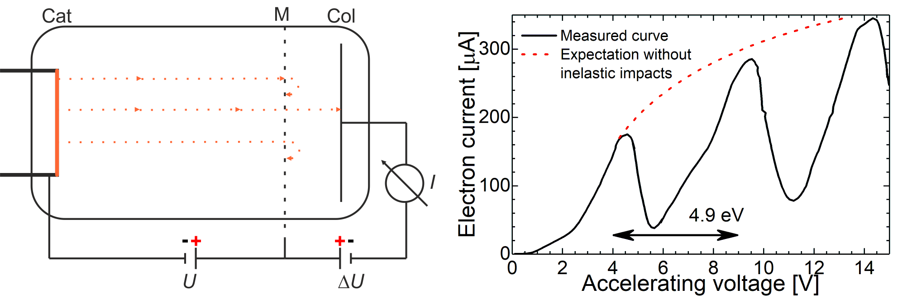

This page was generated from `/home/lectures/exp3/source/notebooks/L19_AMA/Quantum_mechanics_introduction.ipynb`_.

Introduction into Quantum Mechanics¶
The argue about the nature of light¶
At the beginning of the 20th century experimental findings that could not be explained on the basis of classical approaches became more frequent. Such experiments that gave rise to the development of quantum physics are for example - The discrepancy between the theoretically predicted and the experimentally observed spectral distribution of cavity radiation (ultraviolet catastrophe) - The explanation of the photoelectric effect - The interpretation of the Compton effect - The explanation of the line spectra of atoms in Franck-Hertz experiments Thus it surfaced that both classical mechanics predicting a defined trajectory of a particle within a force field on the basis of the particle’s initial position and momentum as well as the wave appraoch of elektromagnetic waves on the basis of Maxwell’s equations needed a revision for describing atoms and molecules.
During the 18th century there was a dispute about the nature of light. Newton proposed a particle-like character on the basis of the straight propagation and the law of refraction. In contrast, Huygens proposed a wave-like character of light on the basis of interference and diffraction. This interpretation seemed to be proven when Heinrich Hertz discovered electromagnetic waves and light was interpreted as a special spectral region being as well governed by Maxwell’s equations. For our brief introduction we will now focus on the photoelectric effect which undoubtly demonstrates that light has also particle properties. In addition we will discuss the Franck-Hertz experiment which indicates that not every amount of energy is allowed to excited atoms..
Hallwachs effect and photoelectric effect¶
In 1888 Wilhelm Hallwachs published the result that metal plates irradiated with UV light become positively charged. He explained this results through teh emission of electrons which was the foundation of the explanation of the photoelectric effect.

Fig.: (left) Scheme of the apparatus used by Hallwachs. (center) Scheme of the apparatus used by Lennard and the corresponding photocurrent :math:`I_{mathrm{ph}}`. (right) From the onset voltage :math:`U_0` one can calculate the work function :math:`W_{mathrm{a}}` as intercept and Planck’s constant :math:`h` as part of the slope.
Later in 1902 Lennard measured the photocurrent between two plates in vacuum. The current set in already at a negative voltage \(U_0\) between the plates und reached a plateau which depended only on the light’s intensity. He concluded the kinetic energy of the electros is \(E_{\mathrm{kin}} \le e \cdot U_0\) and further - The kinetic energy of the photoelectrons depends on the frequency of the light \(\nu\), not on its intensity. - The number of photoelectronis proportional to the light’s intensity. - There is no delay between light irradiation and electron emission.
Later in 1905 Einstein explained these findings on the basis of the quantum model of light. In accord to this model every absorbed quantum of energy transfers its energy \(h \cdot \nu\) completely to one electron. The maximum kinetic energy of an electron is then governed by
with \(W_{\mathrm{a}} = -e \left( \phi_{\mathrm{vac}} - \phi \right)\) being the work function of one electron. The work function can be determined by means of the voltage \(U_0\) at which the photocurrent sets in \(E_{\mathrm{kin}}^{\mathrm{max}} = -e\cdot U_0\) with \(U_0 < 0\).
Franck-Hertz Experiment¶
In 1914 James Frank and Gustav Hertz proved that the quantification of energy plays a major in collision processes. A vacuum tube filled with mercury vapor was equipped with a cathode emitting electrons and a wire mesh for accelerating electrons with the energy \(e \cdot U\). The electron collector instead has a potential of \(U_{\mathrm{Col}} = U -\Delta U\). Thus, electrons are decelerated after passing the mesh. Only those electron can reach the collector if their energy is equal or bigger than \(e \cdot \Delta U\). If one measures the electron current at the collector in dependence of the acceleration voltage one obtains a curve similar as depicted.

Fig.: (left) Scheme of the apparatus used by Franck and Hertz. A wire mesh (M) is used to accelerate electrons emitted from the cathode. After passing the mesh the electrons are decelerated before reaching the collector. (right) An example measured curve along with expectated results without inelasting scattering.
From 0 to 4,9 eV the current is rising, whereas it is decreasing after passing 5 V. For higher accelerating voltages the current is then increasing again until it reaches the next local maxima at around 9.8 V. The reason for this pattern are inelastic impacts and energy transfer from electrons to mercury atoms. The distance between the local maxima corresponds to the excitation energy of mercury. This demonstrates that atoms can absorb energy only in quantized amounts. The excited Hg atoms then decay to lower energetic states by emitting light leading to bright rings within the vacuum tube.